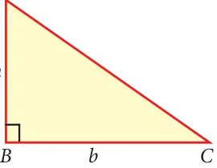

7 MENSURATION
The most beautiful plane figure is the circle and the most beautiful solid figure is the sphere. - Pythagoras.
Heron of Alexandria was a Greek mathematician. He wrote books on mathematics, mechanics and physics. His famous book 'Metrica' consists of three volumes. This book shows the way to calculate area and volume of plane and solid figures. Heron has derived the formula for the area of triangle when three sides are Heron given.
A.D (C.E) 10-75
Learning Outcomes
 To use Heron's formula for calculating area of triangles and quadrilaterals.  To find Total Surface Area (TSA), Lateral Surface Area (LSA) and Volume of cuboids and cubes.
7.1 Introduction
Mensuration is the branch of mathematics which deals with the study of areas and volumes of different kinds of geometrical shapes. In the broadest sense, it is all about the process of measurement.
Mensuration is used in the field of architecture, medicine, construction, etc. It is necessary for everyone to learn formulae used to find the perimeter and area of two dimensional figures as well as the surface area and volume of three dimensional solids in day to day life. In this chapter we deal with finding the area of triangles (using Heron's formula), surface area and volume of cuboids and cubes.
For a closed plane figure (a quadrilateral or a triangle), what do we call the distance around its boundary? What is the measure of the region covered inside the boundary?
In general, the area of a triangle is calculated by the formula
Area \(= \frac{1}{2} \times\) Base \(\times\) Height sq. units That is, \(A = \frac{1}{2} \times b \times h\) sq. units where, b is base and h is height


of the triangle. Fig. 7.1 Fig. 7.2 From the above, we know how to find the area of a triangle when its 'base' and 'height' (that is altitude) are given.